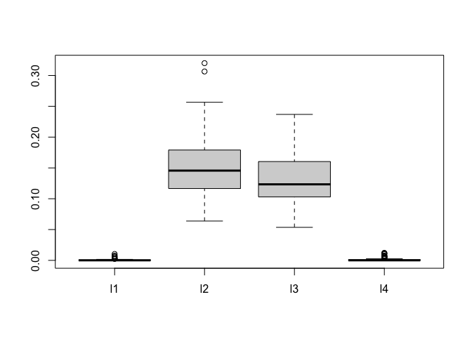

The bark package implements estimation for a Bayesian nonparametric regression model represented as a sum of multivariate Gaussian kernels as a flexible model to capture nonlinearities, interactions and feature selection.
Installation
You can install the released version of bark from CRAN with:
install.packages("bark")And the development version from GitHub with:
require("devtools")
devtools::install_github("merliseclyde/bark")Example
library(bark)
set.seed(42)
traindata <- sim_Friedman2(200, sd=125)
testdata <- sim_Friedman2(1000, sd=0)
fit.bark.d <- bark(y ~ .,
data=data.frame(traindata),
testdata = data.frame(testdata),
classification=FALSE,
selection = TRUE,
common_lambdas = FALSE,
printevery = 10^10)
mean((fit.bark.d$yhat.test.mean-testdata$y)^2)
#> [1] 1738.992bark is similar to SVM, however it allows different kernel smoothing parameters for every dimension of the inputs x as well as selection of inputs by allowing the kernel smoothing parameters to be zero.
The plot below shows posterior draws of the λ for the simulated data.
boxplot(as.data.frame(fit.bark.d$theta.lambda))
The posterior distribution for λ1 and λ4 are concentrated near zero, which leads to x1 and x2 dropping from the mean function.